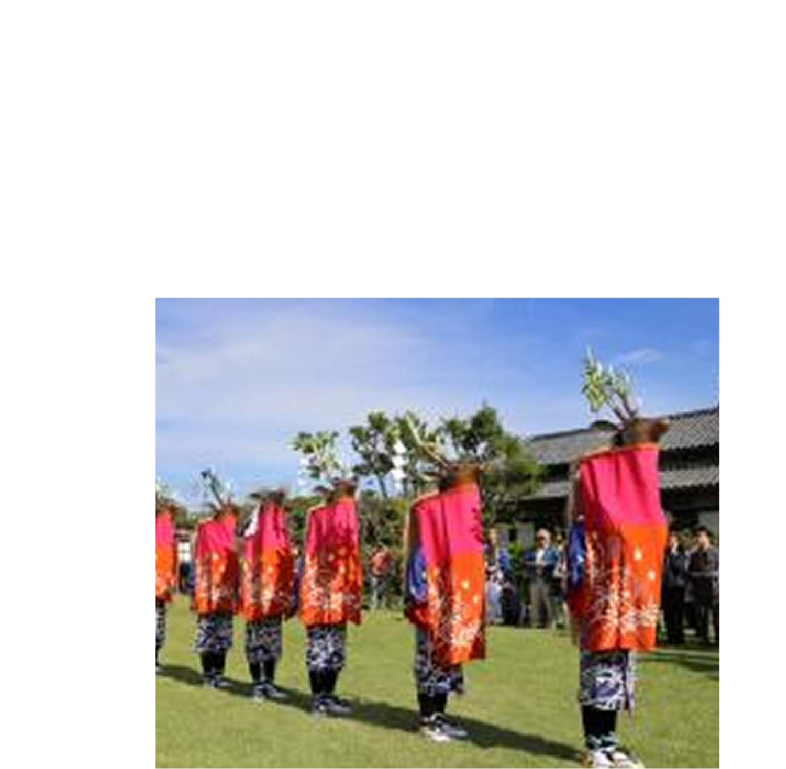

-
愛媛県
愛媛県は、みかんの里として知られる温暖な土地に、美しい海と山の自然が広がります。道後温泉や松山城など歴史と文化の名所も多く、俳句や祭りに息づく風土が感じられます。 海の幸や地元グルメも豊富で、自然と文化、食をゆったり楽しめる旅にぴったりの県です。

お土産
-

丸ごとみかんチーズケエキ
愛媛県の「丸ごとみかんチーズケエキ」は、ふわりとしたチーズ生地の中にみかんを丸ごと包み込んだ贅沢なスイーツ。爽やかな酸味とまろやかな甘さが絶妙に溶け合い、ひと口で愛媛の恵みを感じられます。見た目も可愛らしく、お土産にも喜ばれる人気の一品です。
-

塩みかん
愛媛県の「塩みかん」は、完熟みかんをまるごと使った万能調味料。みかんの爽やかな香りと塩のまろやかさが料理に深みを加えます。肉や魚料理はもちろん、サラダやデザートにもぴったり。愛媛の太陽と海の恵みを感じる、新しいご当地調味料として人気です。
-

金時のさぶ
愛媛県の銘菓「金時のさぶ」は、ほっくり甘い金時芋の風味をサクッと焼き上げたお菓子。香ばしい香りとやさしい甘さが広がり、どこか懐かしい味わいです。お茶うけにもぴったりで、世代を問わず愛される素朴な逸品。愛媛の豊かな自然が育んだやさしい甘さをお楽しみください。
観光地
-

別子銅山産業遺産
愛媛県新居浜市にある「別子銅山産業遺産」は、かつて日本の近代化を支えた歴史の舞台。赤レンガの建物や坑道跡が当時の面影を今に伝えます。自然に囲まれた山中に広がる遺構はまるで時が止まったよう。産業の発展と人々の暮らしを感じながら、ロマンあふれる歴史探訪を楽しめます。
-

紙のまち資料館
愛媛県四国中央市の「紙のまち資料館」は、日本一の紙どころとして知られるこの地の歴史と技術を楽しく学べるスポットです。昔の製紙道具や紙製アートが展示され、手すき体験も人気。紙づくりの奥深さに触れながら、職人の技と情熱を感じられる、心あたたまるミュージアムです。
-

砥部焼伝統産業会館
愛媛県の「砥部焼伝統産業会館」は、温もりある白磁「砥部焼」の魅力を存分に味わえるスポットです。歴史ある器や職人の技を紹介する展示のほか、絵付け体験も楽しめます。やさしい風合いの器に自分だけの模様を描けば、旅の思い出にもぴったりです。
体験
-

遊子谷七ツ鹿踊り
愛媛県宇和島市の「遊子谷七ツ鹿踊り」は、400年以上受け継がれてきた伝統芸能。七人の踊り手が鹿の頭をかぶり、太鼓と笛の音に合わせて勇壮に舞います。体験では衣装に触れたり、動きを学んだりと、地域の文化を肌で感じられる貴重な時間が過ごせます。